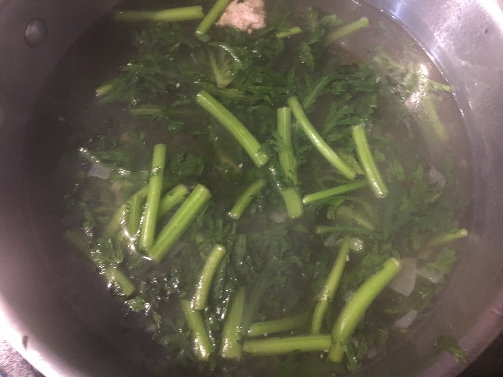

| Other | Meat | Veggie | Fruit |
|---|---|---|---|
| chicken broth | ground pork | chrysanthemum | |
| wonton soup base | shallot |
| instructions |
|---|
| Golden minced shallots |
| Stir fry ground pork until no longer pink |
| Add an equal amount of water and chicken broth |
| Season with wonton soup base |
| Adjust broth to taste, want it light |
| Cut chrysanthemums (cai cuc, tung ho) into 3 in lengths, use the stems if they are tender enough |
| Add steams first then leaves |
| Bring to a small simmer and then remove from heat |